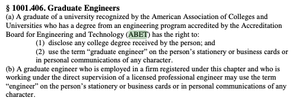

7.0 Engineering Licensing#
Course Website
References/Readings#
PPI Online Training Exams (~$80) Recomended by prior students; do the short term subscription (a few months or loss
Videos#
The formal licensure of engineers in the United States began in response to public safety concerns raised by catastrophic engineering failures in the late 19th and early 20th centuries. One of the most significant events that sparked the push for licensure was the collapse of the South Fork Dam in Pennsylvania in 1889, which led to the Johnstown Flood. This disaster killed over 2,200 people and highlighted the dangers of inadequate engineering oversight.
In the wake of this and other tragedies, the need for a system that would hold engineers accountable to specific standards of practice became evident. Prior to licensure, anyone could call themselves an engineer, regardless of qualifications, which led to inconsistent and sometimes dangerous practices.
The First Engineering Licensure Law: Wyoming, 1907#
In 1907, Wyoming became the first state to enact an engineering licensure law. This law required individuals practicing engineering to demonstrate their competence through education, experience, and examination. It marked the beginning of the regulated profession we recognize today, where engineers must be licensed to perform certain tasks, especially those involving public safety.
The Wyoming law was a direct response to growing concerns over unregulated engineering practices. Over the next few decades, other states followed suit, creating their own licensure requirements and establishing boards to regulate the profession. Expansion of Licensure Across the United States
By the 1930s, most states had adopted licensure laws for engineers. The primary motivation for these laws was to protect the public by ensuring that only qualified professionals were entrusted with the responsibility of designing and overseeing critical infrastructure projects, such as bridges, dams, and buildings. This period saw the establishment of state boards of professional engineers, which were tasked with administering exams and ensuring compliance with engineering standards.
The Role of NCEES#
In 1920, the National Council of Examiners for Engineering and Surveying (NCEES) was formed. Its mission was to create a standardized process for engineering licensure across the states, facilitating reciprocity and ensuring that engineers met consistent standards nationwide. The NCEES developed and administered the Fundamentals of Engineering (FE) and Principles and Practice of Engineering (PE) exams, which became central to the licensure process.
New London School Disatser (Texas)#
The New London School Disaster was a tragic event that took place on March 18, 1937, in New London, Texas. Here’s a brief history:
Location and Incident: The disaster occurred at the New London Consolidated School, a large, two-story school building in New London, Texas. The building was located in a small rural community.
Explosion: The tragedy struck when a natural gas explosion occurred in the school’s basement. The explosion was caused by a gas leak from a faulty line that had been installed without proper safety measures.
Casualties: The explosion resulted in the death of around 295 people, including students and teachers. It remains one of the deadliest school disasters in U.S. history.
Immediate Aftermath: The explosion caused the school building to collapse, trapping many of the victims beneath the rubble. Rescue efforts were hampered by the extensive damage and the scale of the disaster.
Investigation and Consequences: An investigation revealed that the explosion was due to a gas leak from an improperly installed pipe. This led to changes in regulations regarding natural gas safety and the installation of safety measures in schools and other public buildings.
Legacy: The New London School Disaster had a profound impact on safety regulations in schools across the United States. It led to improvements in building codes and the enforcement of stricter safety standards for gas installations.
Shortly after the disaster, the state legislature met in an emergency session and enacted the Engineering Registration Act (now rewritten as the Texas Engineering Practice Act). Public pressure was on the government to regulate the practice of engineering due to the faulty installation of the natural gas connection. The use of the title “engineer” in Texas remains legally restricted to those who have been professionally certified by the state to practice engineering. https://en.wikipedia.org/wiki/New_London_School_explosion
Modern Engineering Licensure#
Today, licensure remains a cornerstone of the engineering profession, particularly in fields like civil, structural, and environmental engineering, where public safety is paramount. The core principles of licensure, established over a century ago, still guide the profession: competency, accountability, and the protection of the public.
The history of engineering licensure in the U.S. reflects a broader societal recognition that the work of engineers has a direct impact on public safety and welfare. By establishing rigorous standards for education, experience, and ethics, the profession has evolved into one that not only serves the public but also holds its members to the highest standards of responsibility.
The Importance of Licensure in Engineering#
What is a License? In the context of engineering, a license grants permission from a competent authority, such as a state licensing board, to perform specific tasks that would otherwise be illegal or unauthorized. According to Black’s Law Dictionary, a license confers the right to do an act that, without such authorization, would be considered illegal, a trespass, or a tort. In the engineering profession, this primarily applies to activities that have a direct impact on public safety, infrastructure, and environmental sustainability.
The Industrial Exemption Clause Despite the importance of licensure, many states in the U.S. include what is known as the “industrial exemption clause.” This clause allows certain engineers to practice without obtaining a professional engineering (PE) license, as long as they meet specific criteria. For example, engineers employed by public utilities, state agencies, or manufacturing companies may be exempt from licensure if their work is incidental to the non-engineering services or products of their employer. In these cases, the engineer’s role does not typically involve the direct public impact that licensure is designed to regulate.
Do Engineers Really Need a License? Interestingly, the majority of engineers in the U.S. don’t need to be licensed due to the broad coverage of the industrial exemption, which affects about 90% of engineers. The one major exception is civil engineers, who almost always require licensure because their work directly influences public infrastructure such as roads, bridges, and buildings. While many chemical, electrical, industrial and mechanical engineers do obtain PE certification, it’s often not a legal necessity for their work.
Note
License: A permission, accorded by a competent authority, conferring the right to do some act which without such authorization would be illegal, or would be a trespass or a tort. Black’s Law Dictionary, 2nd Ed.
Industrial exemption clause: Many states allow industrial exemptions with certain stipulations. The engineer must be an “employee of a public utility, state agency, or manufacturing company.” The engineering work must be incidental to the products or non-engineering services of the engineer’s employer The PE Industrial Exemption: Keep it or Toss it?
License Reciprocity in the United States#
License reciprocity allows professional engineers (PEs) to practice in multiple states without having to go through the full licensure process in each one. This is made possible through agreements between state licensing boards, which recognize the qualifications of engineers licensed in other states. Typically, an engineer must apply for licensure in the new state, provide proof of their current license and qualifications, and sometimes meet specific local requirements, such as passing a state ethics exam. Reciprocity ensures that licensed PEs can work across state lines, facilitating broader opportunities and more efficient project management.
Some emergent international reciprocity agreements will allow engineers to practice in multiple nations.
For instance an agreement with US and UK engineering societies exists:
[https://www.asce.org/publications-and-news/civil-engineering-source/article/2024/09/06/agreement-streamlines-reciprocal-licensure-for-engineers-in-the-us-and-uk (URL accessed 9 Sep 2024) Link here is to a local copy](http://54.243.252.9/ce-4200-webroot/ce-4200-notes/lessons/licensing/Agreement streamlines reciprocal licensure for engineers in the US and UK _ ASCE.htm)
Texas allows for reciprocity between Texas and other countries, but the agreements in place at this time are limited to temporary licensure only. Texas has temporary license agreements with Mexico, Canada, and Australia based on the NAFTA and AUSFTA free trade agreements. The temporary license is good for one year, and may be renewed only two times. For a standard license, one must pass the Principles and Practice of Engineering (PE) exam.
At some point one can expect recriprocity with all commonwealth nations given the UK agreement.
Note
The Commonwealth of Nations, often referred to simply as the Commonwealth, is a political association of 56 member countries, most of which were formerly part of the British Empire. The organization was established in 1949 to foster cooperation, trade, and mutual support among its member states, which are diverse in terms of geography, culture, and economic development.
Key characteristics of Commonwealth nations include:
Shared values: Democracy, human rights, and the rule of law are emphasized.
Voluntary membership: Countries choose to join or remain in the Commonwealth.
Diverse members: The Commonwealth includes countries from Africa, Asia, the Americas, Europe, and the Pacific.
Head of the Commonwealth: The symbolic head is the British monarch, but this role does not entail political power over the member nations.
Some of the most notable Commonwealth members include the United Kingdom, Canada, Australia, India, South Africa, and New Zealand. While many Commonwealth countries maintain strong historical and cultural ties to the UK, they operate as independent, sovereign nations.
Benefit to Society#
The benefit of licensed engineers to society is profound, as they play a crucial role in ensuring public safety, health, and welfare. By meeting rigorous education, experience, and ethical standards, licensed engineers are entrusted with designing, building, and maintaining critical infrastructure such as roads, bridges, buildings, water systems, and electrical grids. Their licensure guarantees that they possess the technical expertise and accountability to perform their duties responsibly, minimizing risks of structural failures, environmental harm, and safety hazards.
Furthermore, licensed engineers uphold ethical standards, ensuring transparency, honesty, and fairness in their work. This protects the public from negligence, substandard work, and unethical practices. By signing and sealing engineering plans, licensed engineers assume legal responsibility for their projects, reinforcing trust and ensuring that the infrastructure they create and maintain is safe, reliable, and efficient.
Benefit to the Engineer#
The benefits of licensure to the engineer and their company extend beyond legal compliance, offering significant professional and business advantages.
For the Licensed Engineer:
Increased Credibility and Professional Recognition: Holding a Professional Engineer (PE) license distinguishes an engineer as a recognized expert in their field. It signals to clients, employers, and the public that they meet rigorous standards of education, experience, and ethics. This credibility can enhance the engineer’s reputation and open doors to more significant career opportunities.
Greater Career Advancement: Licensed engineers often have access to higher-level positions, including leadership roles in project management, design, and consultancy. Many firms and government agencies require a PE license for certain senior or specialized roles, meaning licensure can lead to increased responsibilities, promotions, and better compensation.
Legal Authority and Independence: A PE license grants the legal authority to sign and seal engineering plans, reports, and calculations, which are essential for regulatory approval of projects. This ability gives licensed engineers autonomy in their work, allowing them to take on projects independently or start their own firms. It also positions them as a trusted point of final decision-making on engineering matters.
Job Security and Marketability: In sectors such as civil engineering, structural engineering, and environmental engineering, being licensed is often mandatory for practice. This makes a PE license a significant asset in terms of job security. Engineers with licensure are more marketable to employers and clients because their qualifications are formally recognized by regulatory boards.
Ethical Responsibility and Professional Growth: Being licensed holds engineers to a higher standard of accountability and ethical practice. This not only promotes professional growth but also encourages continuous learning and adherence to evolving industry standards through required continuing education.
For the Company:
Ability to Bid on Projects: Many public and private-sector contracts, particularly for infrastructure, government, and regulated industries, require the involvement of a licensed PE. Companies with licensed engineers on staff can bid on a wider range of projects, especially high-value and complex projects that require oversight from a licensed professional.
Legal Compliance and Reduced Liability: Having licensed engineers ensures that the company is in compliance with state regulations and engineering codes. This minimizes the risk of legal issues related to improper design or construction, which could lead to financial loss or damage to the company’s reputation. Licensed engineers also reduce liability, as they take legal responsibility for their signed work.
Competitive Advantage: Firms that employ licensed engineers can market themselves as having a higher level of expertise and professionalism. This competitive edge can help them secure contracts, build trust with clients, and improve their standing within the industry. It also sets the company apart from competitors that may lack the credentials to sign off on critical work.
Expanded Service Offerings: Licensed engineers enable companies to offer a broader range of services. This is particularly beneficial in fields like civil engineering, where PEs can sign and approve designs for public works, buildings, and infrastructure projects. This flexibility allows a company to diversify its project portfolio.
Reputation and Client Trust: Clients are more likely to trust companies that employ licensed professionals. A PE license signifies that the company adheres to stringent standards of quality and safety, which enhances client confidence and long-term business relationships.
WCOE Policy on Licensing#
“The College of Engineering encourages our engineering students to graduate with their engineering degrees and become licensed professional engineers.” -Fundamentals of Engineering Exam Initiative August 31, 1999
Texas Engineering Practice Act#
The TEPA is the legislative construct that oversees engineering and establishes what it is, is not, who can participate, and issues licenses through the Texas Board of Professional Engineers.
Practice of Engineering#
The practice of engineering means the performance of or an offer or attempt to perform any public or private service or creative work, the adequate performance of which requires engineering education, training, and experience in applying special knowledge or judgment of the mathematical, physical, or engineering sciences to that service or creative work.
The practice of engineering includes:
consultation, investigation, evaluation, analysis, planning, engineering for program management, providing an expert engineering opinion or testimony, engineering for testing or evaluating materials for construction or other engineering use, and mapping;
design, conceptual design, or conceptual design coordination of engineering works or systems;
development or optimization of plans and specifications for engineering works or systems;
planning the use or alteration of land or water or the design or analysis of works or systems for the use or alteration of land or water;
responsible charge of engineering teaching or the teaching of engineering;
performing an engineering survey or study;
engineering for construction, alteration, or repair of real property;
engineering for preparation of an operating or maintenance manual;
engineering for review of the construction or installation of engineered works to monitor compliance with drawings or specifications;
a service, design, analysis, or other work performed for a public or private entity in connection with a utility, structure, building, machine, equipment, process,system, work, project, or industrial or consumer product or equipment of a mechanical, electrical, electronic, chemical, hydraulic, pneumatic, geotechnical, or thermal nature; or
providing an engineering opinion or analysis related to a certificate of merit under Chapter 150, Civil Practice and Remedies Code; or
any other professional service necessary for the planning, progress, or completion of an engineering service
Education#
Graduate of ABET accredited program:

FE/EIT#

PE Exam#
No specific reference in TEPA, but by reference to Board. TBPE
SER#
Supplimentary experience record, a requited part of the application.